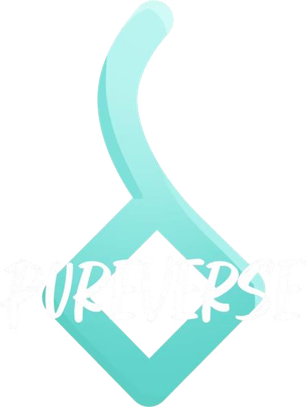
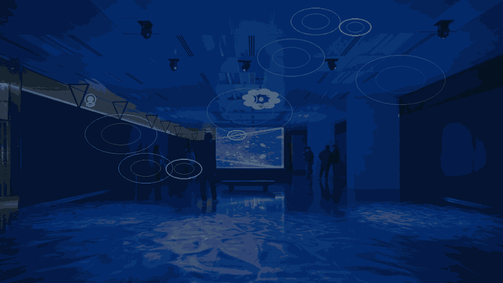

真
真跡為體
展出西方寺珍藏的唐卡真跡，讓訪客親臨其前，凝視線條、金彩與莊嚴。

以西方寺珍藏的唐卡真跡為主角，配上以大和尚聲音打造的「唐卡 AI 語音介紹員」—— 讓每一幅唐卡親自向你說法。沉浸光影與水鏡廊，皆為烘托這場真跡與聲音的相遇。
主角，是西方寺珍藏的唐卡真跡；靈魂，是為每一幅唐卡而設、以大和尚聲音說法的 AI 語音介紹員。沉浸光影、誦經場次與水鏡廊，全部只為烘托這兩位主角。
展出西方寺珍藏的唐卡真跡，讓訪客親臨其前，凝視線條、金彩與莊嚴。
每幅唐卡都有以大和尚聲音說法的 AI 介紹員——可導覽、可問答、可開示。
光影、誦經與水鏡，只為承托唐卡與聲音，讓人靜心走進其中。
每一幅唐卡都是主角。於專業佈光與禪意動線中實體展出，讓訪客近距離凝視真跡的筆觸、金彩與莊嚴——這是任何數位重製都無法取代的相遇。
走到任何一幅唐卡前，以大和尚聲音打造的「唐卡 AI 語音介紹員」便會為你娓娓道來——本尊、典故、象徵與修行意涵。你更可隨時發問，它即時以大和尚的聲音回應。
「這幅唐卡，說的是⋯⋯」 大和尚的聲音 · 唐卡 AI 語音介紹員
同一把大和尚的聲音，除了為唐卡真跡說法，也在每日五個定時場次誦讀不同經文，配以專屬的沉浸光影主題。訪客可依心之所向，選擇最想參與的一場。點按下方場次，了解每一場的主題。
地面與牆面連成一片流動水鏡。深度鏡頭感知每一位訪客的動作——你的每一步、每一次舉手，都會泛起漣漪； 當兩個人的漣漪相遇，便綻放成一朵蓮花。它讓人重新留意自己的一舉一動，也看見「一念動，眾緣共振」——你我從不孤立。

全程於 Pureverse 自家沉浸空間舉行，便於長期營運與反覆調整。以下依人流動線劃分三區，並附建議的分批入場方案。
願每一位走進來的人，先在唐卡真跡前靜心，再由 AI 語音介紹員引路，帶走一份平靜。 也願西方寺看見，這套「真跡 × 聲音」的模式值得延續——走進更多寺院、法會與活動，讓傳統的聲音，被更多人聽見。